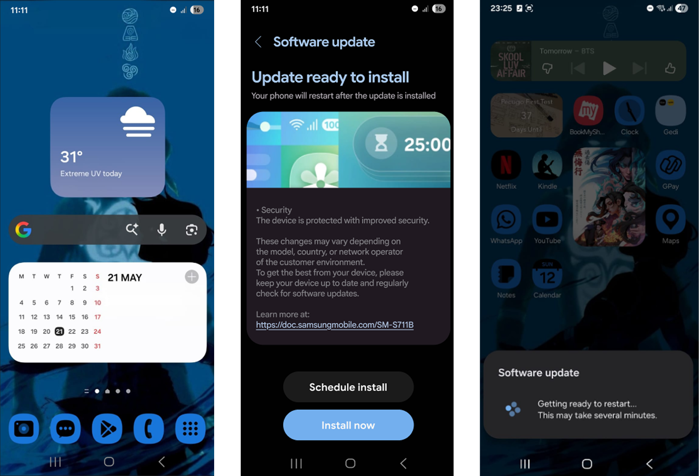
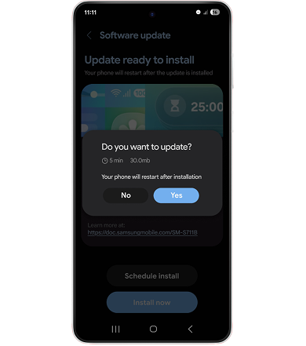
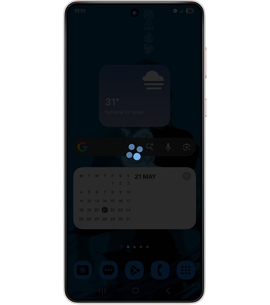
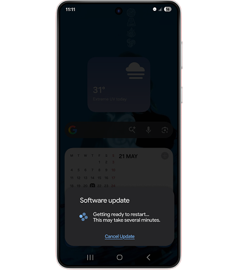
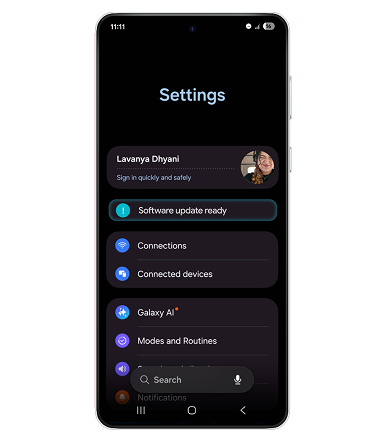
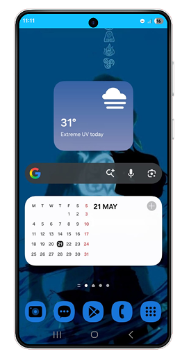
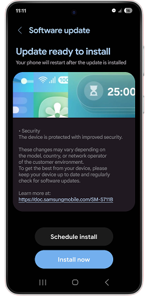
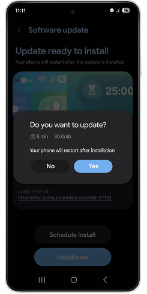
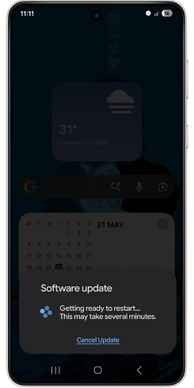

Software updates should ask, not assume.

Where is the friction?
Samsung's auto-update notification is designed to help users stay current.
But in practice, it creates a
moment of forced urgency through an unexpected pop-up that demands immediate action, with no easy way to back
out once you've tapped "install now".
After interviewing some users and also doing some secondary research,
there were some friction points users that came up.

"I was trying to book a cab to go home at night, and then suddenly the auto-update pop-up came, making me accidentally click the install button and restarting my phone"
S, 30 years old, Corporate employee
- The auto-update screen comes rather abruptly without warning.
- Once the update button is clicked, users are not given an option to cancel the update and have to force restart their devices.
- This can create frustration in time-sensitive situations.
.PNG)
"I usually don't mind software updates if I am free, but half the time I don't even know what I am updating for."
A, 21 years old, Student
- Users felt there is lack of transparency regarding updates.
- Users also have issues with storage and available space.
- Users would like to know if they have enough space before updating.

"The pop-ups are so frequent, I usually just disable them because they interrupt my work on the phone."
P, 26 years old, Freelancer
- Users feel update interruptions are excessive.
- Many disable auto updates completely.
- Frequent prompts feel invasive and frustrating.
Current Auto update feature flow
Samsung currently opens a page which gives the users a notification about Updates.

How does this impact the users?
- Users feel that they don't have a choice when it comes to choosing their update timings as this feature makes the updates feel forced.
- They do not understand the tech specifications and feel mistrust regarding updating their phones.
- They feel like this feature is sudden and abrupt.
- There have been comparisons with other OS systems , where users have mentioned the update features don't feel as invasive.
Why should the business care?
Samsung needs users to actually install security updates and not ignore or defer them indefinitely.
- Increase update completion rates.
- Reduce support queries from update confusion.
- Retain user trust with the operating system.
How did I bridge user and business needs?
After identifying the friction points, I started to ideate and create a prototype for the redesign of the auto-update feature. Through the process, I focused on making the update flow more transparent, giving users autonomy, and easing them into the update screen.

Update Transparency
- To avoid accidental updates, I decided to add a pop-up window to ask for a confirmation from the users.
- •This feature also can make room for giving user an estimate of how long and how much space the update can take

Easing into the update Screen
- I wanted to create a transition screen/flow before the auto-update page pops up so users are not caught off-guard and can be eased into the update screen.

Putting the Decision in Users' Hands
- I introduced an additional cancellation option, allowing users to stop the update process if the restart timing was no longer convenient.

Making Manual updates easier
- Creating a tile for updates on the main settings screen makes it easy for users to navigate this.
- Other competitor OS often have update alert on the settings page.
What was the user feedback?
I showed these prototypes to some Samsung users to get their insights to further improve the user flow. Certain points stood out while talking to the users.
I like how I can cancel the update if i want to, however, I feel like adding animation before the auto-update page doesn’t make this process feel less abrupt
— Usability test participant
Four of five participants completed the scheduling task first try. A user suggested adding notification pop-up bar as a reminder: I considered this solution, however, it was also feeling distracting and, from other user feedback, can often be ignored.
Final Design
The final prototype covers the full update flow: from the notification through scheduling, confirmation, and the post-install summary.




Impact
- Users can make informed decisions instead of reacting to unexpected interruptions.
- Transparency around updates reduces confusion and frustration.
- Flexible scheduling and cancellation options improve perceived control.
- The update process feels collaborative rather than intrusive.
Reflections
This project taught me how much friction can exist in the gap between a system's intentions and how users experience it. It also reinforced my belief that small interactions can have a significant impact on how users perceive a product. Sometimes improving an experience isn't about adding new functionality, but about making users feel informed, respected, and in control.
Next Steps
This study focused primarily on mid-range Samsung Galaxy devices that were accessible to me during the research process. Future iterations would benefit from testing across a broader range of Samsung devices, One UI versions, and user groups to validate whether these findings remain consistent across the ecosystem.